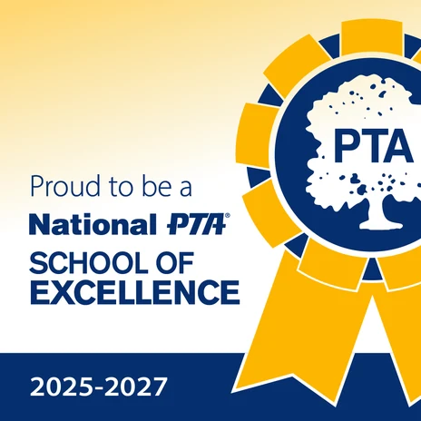

Te damos la bienvenida a la PTA de Will Rogers
Padres, maestros y vecinos trabajando juntos por cada niño y niña de Will Rogers Learning Community.
Lo que sigue
También se viene
-
Te invitamos a la Noche de Libros y Galletas
Mié. 30 de sept. · 5:30 p. m. · Auditorio
¡Ven en pijama! Lee con tus maestros favoritos y tus amigos, con galletas y libros para todos. Una noche acogedora para toda la familia.
-
Te invitamos al Read-A-Thon
Hasta el vie. 2 de oct.
¡Lee más, haz más, un mañana más brillante! Inscribe a tu lector, registra minutos y reúne donativos. Cada página leída y cada donación apoya los programas de la PTA, con premios para lectores, recaudadores y salones enteros.
-
Te invitamos a la Noche de Arte Reflections
Vie. 9 de oct. · 5:30 p. m. · Cafetorium
¡Haz arte, conecta y gana premios! Reflections es el programa de arte estudiantil de la PTA Nacional. Crea una obra sobre el tema de este año, «Lo que mi cultura significa para mí», con la ayuda de voluntarios expertos, y participa por una tarjeta de regalo de $25 de Blick. Las obras se entregan hasta el 16 de octubre.
-
Te invitamos a la Noche de Adultos y Subasta
Subasta del 6 al 14 de nov. · Fiesta el sáb. 14 de nov.
¡La fiesta más grande del año! Puja toda la semana por cenas, viajes, experiencias y tesoros únicos de negocios locales y familias de Will Rogers, y luego celebremos juntos en la fiesta. ¿Tienes algo para donar? ¡Nos encantaría!
Por ahora eso es todo en el calendario. Las nuevas fechas llegan en el boletín de los miércoles y en el calendario completo.
Hay un lugar para todos
Ya sea que tengas una hora libre o la energía de todo un comité, tu familia hace más fuerte a Will Rogers.
-
Únete a la PTA
La membresía cuesta $11 y cada miembro vota en nuestras reuniones mensuales de la asociación.
Únete por $11 -
Echa una mano
Ayuda en un evento o únete a un comité de planificación. Cada hora cuenta.
Formas de ayudar -
Dona
Las donaciones son deducibles de impuestos (somos una organización 501(c)(3)) y pagan excursiones, la biblioteca, útiles escolares y eventos comunitarios.
Donar
Reuniones de la PTA
El primer miércoles de cada mes, de 8:30 a 9:30 a. m. en la biblioteca, con café y pan dulce. También puedes participar en línea.
Reuniones y agendasNoticias y anuncios
Ponte al día con las últimas noticias, o síguenos en Instagram y Facebook.
Últimas noticias¿Preguntas?
Nos encantaría saber de ti. Encuentra a quién escribir: la mesa directiva, los comités y las PTAs del consejo, distrito y estado.
Contáctanos
¡Hurra! Will Rogers es una Escuela de Excelencia de la PTA Nacional
Nuestra PTA obtuvo la designación National PTA School of Excellence 2025–2027 (Escuela de Excelencia) y fue reconocida con el Phoebe Apperson Hearst Family-School Partnership Award of Merit (se abre en una pestaña nueva), uno de los más altos honores nacionales de la PTA por fortalecer la colaboración entre las familias y la escuela. ¡Gracias a toda nuestra comunidad — este premio es suyo!
Sobre el programa (se abre en una pestaña nueva)Will Rogers Learning Community también es una orgullosa Escuela del Mundo del Bachillerato Internacional®.